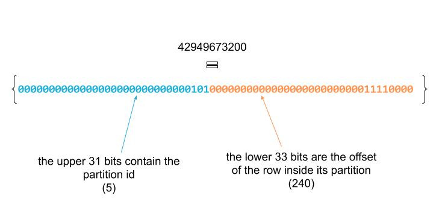
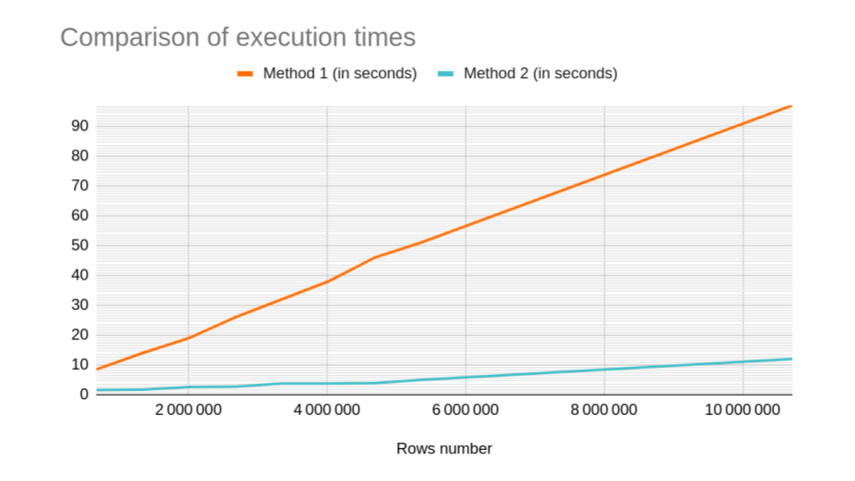

Spark Dataframe: How to add row numbers to a dataframe?
In this tutorial, we will explore a couple of ways to add a sequential consecutive row number to a dataframe.
For example, let this be our dataframe (taken from Spark: The Definitive Guide github repo):
val df = spark.read.option("header", "true").csv(".../data/flight-data/csv/*")
+-----------------+-------------------+-----+
|DEST_COUNTRY_NAME|ORIGIN_COUNTRY_NAME|count|
+-----------------+-------------------+-----+
| United States| Romania| 1|
| United States| Ireland| 264|
| United States| India| 69|
| Egypt| United States| 24|
|Equatorial Guinea| United States| 1|
+-----------------+-------------------+-----+
only showing top 5 rows
After adding a column containing the row number, the result should look like:
+-----------------+-------------------+-----+-------+
|DEST_COUNTRY_NAME|ORIGIN_COUNTRY_NAME|count|row_num|
+-----------------+-------------------+-----+-------+
| United States| Romania| 1| 1|
| United States| Ireland| 264| 2|
| United States| India| 69| 3|
| Egypt| United States| 24| 4|
|Equatorial Guinea| United States| 1| 5|
+-----------------+-------------------+-----+-------+
only showing top 5 rows
row_numwill contain a sequential consecutive row number that will cover the whole dataframe.
The Ugly Way: Using Window functions
Starting from Spark 1.4, a new feature called Window functions has been introduced to Spark SQL (see Databricks blog post). This feature allows to apply aggregations over a dataframe, while returning an output with the same number of rows as the input (unlike grouping aggregations).
Using window functions can be a straightforward way to add sequential consecutive row numbers to a dataframe, by using a specific window function called .. row_number().
This can be done in two steps:
Step 1: define a window specification
import org.apache.spark.sql.expressions.Window
val windSpec = Window.partitionBy(lit(0))
.orderBy(monotonically_increasing_id())
In our window specification we answered two questions:
- How to partition the data (
partitionBy): In order to have a consecutive and sequential row id that covers the entire dataframe, we need to partition in a way that all the data ends up in one single partition (and this is why it is ugly!). - How to order elements inside the same partition (
orderBy): So as to preserve the natural order, we will sort the dataframe usingmonotonically_increasing_id(). This function generates an ordered and unique but not consecutive row id (we will see more about this function in the next section).
Step 2: apply row_number() to the dataframe using the window specification that we have defined in Step 1
val df2 = df.withColumn("row_num", row_number().over(windSpec))
+-----------------+-------------------+-----+-------+
|DEST_COUNTRY_NAME|ORIGIN_COUNTRY_NAME|count|row_num|
+-----------------+-------------------+-----+-------+
| United States| Romania| 1| 1|
| United States| Ireland| 264| 2|
| United States| India| 69| 3|
| Egypt| United States| 24| 4|
|Equatorial Guinea| United States| 1| 5|
+-----------------+-------------------+-----+-------+
only showing top 5 rows
Done!
Now, we have a column containing a consecutive row number. However, if we take a closer look at the result, and show the first and the last row, along with the partition id, we will observe this:
val df3 = df2.withColumn("partition_id", spark_partition_id()).filter(expr("row_num in (1, 1502)"))
+-----------------+-------------------+-----+-------+------------+
|DEST_COUNTRY_NAME|ORIGIN_COUNTRY_NAME|count|row_num|partition_id|
+-----------------+-------------------+-----+-------+------------+
| United States| Romania| 1| 1| 191|
| Greece| United States| 20| 1502| 191|
+-----------------+-------------------+-----+-------+------------+
As I said before, this method requires to group all the data in one single partition (here the chosen partition was n° 191).
This constraint takes away one of the major benefits of Spark, namely, the parallel computation. Because, only one task will be (sequentially) executed in order to compute the row number.
In the next section, we will try explore another way which is a little bit longer, but which tries to take more advantage of the parallel and distributed computation offered by Spark
The Other Way
In this method, we will associate each row with its offset in the partition, and then, we will compute a global offset for each partition, and finally we will add up the two offsets to get the row number.
This can be done in 4 steps:
Step 1
Similar to the last section, we will use the monotonically_increasing_id() function to associate a unique identifier to each row. Let’s call it row_id:
val df2 = df.withColumn("row_id", monotonically_increasing_id())
+-----------------+-------------------+-----+------+
|DEST_COUNTRY_NAME|ORIGIN_COUNTRY_NAME|count|row_id|
+-----------------+-------------------+-----+------+
| United States| Romania| 1| 0|
| United States| Ireland| 264| 1|
| United States| India| 69| 2|
| Egypt| United States| 24| 3|
|Equatorial Guinea| United States| 1| 4|
+-----------------+-------------------+-----+------+
only showing top 5 rows
At the first sight, the result looks almost like what we are looking for, but it is not really:
df2.orderBy('row_id.desc).show
+--------------------+--------------------+-----+-----------+
| DEST_COUNTRY_NAME| ORIGIN_COUNTRY_NAME|count| row_id|
+--------------------+--------------------+-----+-----------+
| Greece| United States| 20|42949673200|
|Bonaire, Sint Eus...| United States| 62|42949673199|
| United States| Haiti| 193|42949673198|
| United States|Saint Kitts and N...| 123|42949673197|
| United States| French Guiana| 4|42949673196|
+--------------------+--------------------+-----+-----------+
only showing top 5 rows
The row_id is way bigger than the total count of this dataset (which is 1 502 rows), and that is because the id generated by monotonically_increatsing_id() is (bitwise) composed of two parts:

Step 2
Let’s separate the two parts into two different columns:
val df3 = df2.withColumn("partition_id", shiftRight('row_id,33))
.withColumn("row_offset", 'row_id.bitwiseAND(2147483647))
+-----------------+-------------------+-----+------+------------+----------+
|DEST_COUNTRY_NAME|ORIGIN_COUNTRY_NAME|count|row_id|partition_id|row_offset|
+-----------------+-------------------+-----+------+------------+----------+
| United States| Romania| 1| 0| 0| 0|
| United States| Ireland| 264| 1| 0| 1|
| United States| India| 69| 2| 0| 2|
| Egypt| United States| 24| 3| 0| 3|
|Equatorial Guinea| United States| 1| 4| 0| 4|
+-----------------+-------------------+-----+------+------------+----------+
only showing top 5 rows
shiftRight: is used to extract the partition id, by shifting the id by 33 bits to the right (equivalent to the>>operator).bitwiseAnd: is used to isolate the row offset by applying a bit mask (1111111111111111111111111111111) that zeroes the upper 31 bits and keeps the 33 lower bits. If you wonder where does this number (2147483647) come from, it just the decimal representation of the mask.
Step 3
Now that we have calculated a local offset for each row, in the next step, we will calculate the global offset for each partition. Let’s start by calculating the size of each partition:
val partitions_size = df3.groupBy("partition_id")
.count()
.withColumnRenamed("count", "partition_size")
+------------+--------------+
|partition_id|partition_size|
+------------+--------------+
| 0| 254|
| 5| 240|
| 1| 255|
| 3| 249|
| 2| 254|
| 4| 244|
+------------+--------------+
At this point, we have calculated the size of each partition (the number of rows per partition). In order to calculate the global offset of each partition, we will do an aggregation over a window specification, so that we compute for each partition the sum of sizes of its preceding partitions:
import org.apache.spark.sql.expressions.Window
val windowSpec = Window.orderBy("partition_id")
.rowsBetween(Window.unboundedPreceding, -1)
val partitions_offset = partitions_size.withColumn("partition_offset", sum("partition_size").over(windowSpec))
+------------+--------------+----------------+
|partition_id|partition_size|partition_offset|
+------------+--------------+----------------+
| 0| 254| null|
| 1| 255| 254|
| 2| 254| 509|
| 3| 249| 763|
| 4| 244| 1012|
| 5| 240| 1256|
+------------+--------------+----------------+
rowsBetween: in the last section we have seen that a window specification answered two questions: how to partition the data and how to order the data. There is a third question that can be answered: how to frame the data i.e, which rows will be aggregated together in order to compute the current row?- In our case, we used
rowsBetween(Window.unboundedPreceding, -1)to indicate that for the current row, we need to aggregate all the preceding rows. orderBy: this we have already seen, it will define how to order the rows.
We are almost there! We need to take care of the partition n°0, by setting its offset to 0.
To do so, we will use a conditional column definition (when(<condition>, <column definition 1> ).otherwise(<column definition 2> )):
val partitions_offset = partitions_size.withColumn("partition_offset",
when(expr("partition_id = 0"), lit(0))
.otherwise(sum("partition_size").over(windowSpec)))
+------------+--------------+----------------+
|partition_id|partition_size|partition_offset|
+------------+--------------+----------------+
| 0| 254| 0|
| 1| 255| 254|
| 2| 254| 509|
| 3| 249| 763|
| 4| 244| 1012|
| 5| 240| 1256|
+------------+--------------+----------------+
Step 4
From this point, computing the row number can be done by adding the row offset to the partition offset. That is why we firstly need to join the main dataframe with the partitions_offset dataframe that we calculated in Step 3:
val df4 = df3.join(broadcast(partitions_offset), "partition_id")
.withColumn("row_num", 'partition_offset+'row_offset+1)
.drop("partition_id", "row_id", "row_offset", "partition_size", "partition_offset")
+-----------------+-------------------+-----+-------+
|DEST_COUNTRY_NAME|ORIGIN_COUNTRY_NAME|count|row_num|
+-----------------+-------------------+-----+-------+
| United States| Romania| 1| 1|
| United States| Ireland| 264| 2|
| United States| India| 69| 3|
| Egypt| United States| 24| 4|
|Equatorial Guinea| United States| 1| 5|
+-----------------+-------------------+-----+-------+
only showing top 5 rows
broadcast: before joining, we added a broadcast hint so that thepartitions_offsetdataframe gets broadcasted through the Spark cluster to avoid shuffles.- We needed to adjust the calculation by adding 1 to the offsets so that
row_numstarts from 1. - We used
drop()to clean out the intermediary columns.
Conclusion
In this tutorial, we explored two different ways to add a sequential consecutive row numbers to a dataframe. The first one does not use the parallelism that Spark offers. While the second one tries to parallelize the computation.
I’ve made some comparisons of execution times using 9 datasets with different numbers of rows. I run my tests on a local setting (8 cores).
The numbers talk for themselves:
| Rows number | Method 1 (in seconds) | Method 2 (in seconds) |
|---|---|---|
| 669 960 | 8,5 | 1,6 |
| 1 339 920 | 14 | 1,7 |
| 2 009 880 | 19 | 2,6 |
| 2 679 840 | 26 | 2,7 |
| 3 349 800 | 32 | 3,8 |
| 4 019 760 | 38 | 3,8 |
| 4 689 720 | 46 | 3,9 |
| 5 359 680 | 51 | 5 |
| 10 719 360 | 97 | 12 |
Unsurprisingly, the first method does not scale, and the processing time adds up due to the sequential execution. Here’s a chart with the same data: 
Thank you for reading this tutorial.. Please don’t hesitate to share your insight in the comment section :)